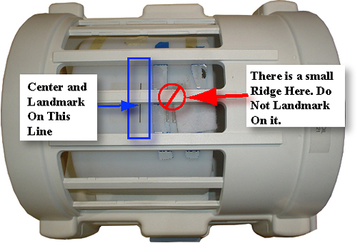

- 00000018WIA303C6E20GYZ
- id_131072891.14
- Jul 5, 2019 10:46:05 PM
Echo Planar Test (EPT)
Prerequisites
| Required persons | Preliminary requirements | Procedure | Finalization |
|---|---|---|---|
| 1 | Not Applicable | 2 hours | Not Applicable |
| Item | Quantity | Effectivity | Part number | Manufacturer |
|---|---|---|---|---|
| 100 mm Sphere Phantom for 1.5T | 2 | - |
46-317586G1 | - |
| EPI Foam Positioner, Body | 1 | - |
2170481 | - |
| Grafidy Base Plate | 1 | - |
46-271410G1 | - |
| EPI Head Loader Positioner | 1 | - |
2291292 | - |
| Head TLT Loader Positioner | 1 | - |
5110241 | - |
| Head Loader | 1 | - |
46-287899G1 | - |
| ||||||||
| Condition | Reference | Effectivity |
|---|---|---|
|
For HDe 1.5T, it is not necessary to perform the Bandpass Asymmetry Correction Tool (BAT) procedure. | - | - |
Startup
About this task
EPT combines the functionality of the current B0 Dither Calibration, Group Delay Calibration and B0 Image Test into a single tool with a simple user interface. The output is suitable for remote support access, trending, and automatic checking of results against acceptance limits. In addition, EPT automatically updates the EPI calibration files when authorized by the user.
-
For TwinSpeed, EPT is run for each Grad Mode, Whole-Body (WB) and Zoom (ZM).
-
Both Grad Modes can be selected in a single pass, but both require calibration at least once per installation and during any other routine system tests.
Procedure
- Place an EPI foam phantom holder and a 100 mm sphere phantom
and phantom loader in the head coil as shown in Figure 1. Landmark on the
center of the sphere, but do not Advance to
Scan.
Figure 1. EPI Phantom Positioning in Old Head Coil 
Figure 2. Landmark Marker 
- Note:From the Service Desktop, start the Service Browser if not already open. Follow the instructions in Figure 5.
Figure 5. Starting EPT 
- Select the Head Coil being used. (See Figure 6.)
Figure 6. Select Head Coil to be Used 
- Click the Start button. The Echo Planar
Test Window will display as shown in Figure 7.
Figure 7. Echo Planar Test Window 
For TwinSpeed, the Grad Mode will display with three possible entries. (See Figure 8.)
Figure 8. Echo Planar Test Window with Grad Mode Option 

Image-Based Short Cross Term Eddy Current Tool
About this task
If the B-zero Image fails during the EPT, quit the EPT and run the Image-Based Short Cross Term Eddy Current tool. This tool may reduce EPI ghosting and is designed to specifically work in conjunction with EPT. If B-zero Image passed, proceed to Test Termination.
Procedure
Test Termination
Procedure
Finalization
Procedure
- Reset the TPS to bring the system back into a known mode.
- Do a test scan to ensure the scanner is working properly before customer turn over.